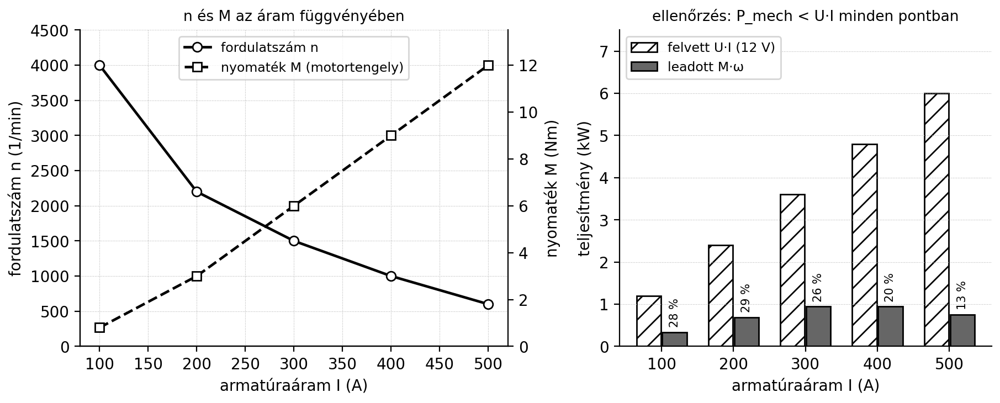

Egy hideg téli reggelen az autó nem indul: az indítómotor (köznyelven önindító) csak lassan forgatja a motort. Az akkumulátor feszültsége nyugalomban rendben van, ezért a hiba valószínűleg az indítómotorban vagy a nagyáramú vezetékben keresendő. Hogy ezt pontosan megértsd, ismerned kell a villamos gépek típusait, mert az indítómotor egy speciális egyenáramú gép, a jármű generátora pedig egy háromfázisú váltakozó áramú gép egyenirányítóval. Az elektromos autók hajtómotorja pedig általában állandó mágneses szinkronmotor. Ez a fejezet ezeket a géptípusokat rendszerezi úgy, hogy a műhelyben felismerd őket, és a hibatüneteket a működési elv alapján értelmezd.
Nézd meg az alábbi jelleggörbét, amely egy soros gerjesztésű egyenáramú motor (indítómotor) fordulatszámát és nyomatékát mutatja az armatúraáram függvényében. Indításkor nagy áram folyik, a nyomaték hatalmas, de a fordulatszám alacsony. Ez pontosan az, amire az indítómotornak szüksége van: nagy nyomatékkal kell megforgatnia a belső égésű motort, miközben annak fordulatszáma még kicsi.

A bal oldali diagramon az armatúraáram 100 A-ről 500 A-re nő, a fordulatszám 4000 1/min-ről 600 1/min-re csökken, a nyomaték 0,8 Nm-ről 12 Nm-re nő: kis áramnál közel négyzetesen (a fluxus is az árammal nő), nagy áramnál a vas telítése miatt közel lineárisan. A nyomaték az indítómotor tengelyén értendő; a főtengelyen a fogaskoszorú áttétele (kb. 10–15) szorozza (ellenőrizendő). A jobb oldali oszlopok az ellenőrzést mutatják: a leadott mindenhol kisebb a felvett -nél (az arány itt névleges 12 V-tal számolt felső becslés; indításkor a kapocsfeszültség ennél kisebb).
A görbék magyarázata: a soros gerjesztésű motorban a mező tekercse sorba van kötve az armatúrával, ezért a mező mágneses fluxusa növekszik az árammal. Kis áramnál (kis terhelésnél) a fordulatszám nagyon magas lehet, míg nagy áramnál (indulásnál) a nyomaték kiemelkedően nagy, a fordulatszám pedig leesik. A motor terhelés nélkül megszaladhat, ami veszélyes.
Figyelem. A nagy soros gerjesztésű motort (pl. vontatómotor) terhelés nélkül nem szabad járatni, mert a fluxus összeesik, a fordulatszám a szilárdsági határ fölé nőhet, és a gép tönkremehet. A jármű-indítómotornál a súrlódás, a kefék és a vezetékellenállás korlátozza az üresjárási fordulatszámot, ezért a gyártói üresjárási próba (csak rögzített motorral, néhány másodpercig, áram- és fordulatszámméréssel) megengedett (ellenőrizendő: gyártói vizsgálati eljárás).
Definíció. A villamos gép (electric machine) olyan energiaátalakító berendezés, amely villamos energiát mechanikai energiává (motor üzem) vagy mechanikai energiát villamos energiává (generátor üzem) alakít át, általában mágneses mező közvetítésével.
A villamos gépeket főbb szempontok szerint csoportosítjuk:
A gépjárművekben leggyakrabban háromféle villamos géppel találkozunk:
Felépítés és működés. Minden generátor alapelve az elektromágneses indukció: ha egy tekercsben a mágneses fluxus időben változik, a tekercs kapcsain feszültség indukálódik. Az egyfázisú generátorban egyetlen tekercs forog (vagy a mágnes forog körülötte), így a kimeneti feszültség közel szinuszos:
ahol a csúcsfeszültség, a körfrekvencia, a frekvencia.
A háromfázisú generátorban három tekercs van, amelyek térben 120-kal el vannak forgatva. Így három, időben is 120-kal eltolt feszültség keletkezik:
A háromfázisú rendszer előnye, hogy ugyanakkora teljesítményt kisebb veszteséggel és simább nyomatékkal lehet átvinni, mint egyfázisúval.
Járműgenerátor. A mai személyautókban a generátor háromfázisú szinkron gép, amelynek forgórésze karmos pólusú (ún. Lundell-rendszer) elektromágnes. Ezt a forgó-gerjesztő áramot szénkeféken és csúszógyűrűkön keresztül kapja. A generátor által termelt háromfázisú váltakozó feszültséget egy beépített hatütemű diódahíd egyenirányítja, ezért a jármű fedélzeti hálózata egyenfeszültséget kap. A kimeneti feszültséget a feszültségszabályozó a gerjesztőáram változtatásával 13,8–14,4 V körül tartja (ellenőrizendő: gyártói adat).
Az egyenáramú gép forgórésze (armatúra) hornyolt lemezelt vasmag, benne a forgórész tekercseléssel. A tekercs végeit az ún. kommutátorhoz vezetik. A kommutátoron szénkefék csúsznak, amelyek az áramot a forgórészbe vezetik (motor) vagy onnan elvezetik (generátor).
Az állórészen vannak a főpólusok, amelyek mágneses mezőt hoznak létre. A mező gerjesztésének módja alapján megkülönböztetünk:
| Gerjesztési mód | Mezőforrás | Indítónyomaték | Fordulatszám terhelés hatására | Járműipari példa |
|---|---|---|---|---|
| Állandó mágnes | Beépített mágnes | Kicsi/közepes | Közel állandó | Kisméretű segédmotorok, ventilátorok |
| Külső gerjesztés | Külön táplált tekercs | Változtatható | Változtatható | Régi generátorok szabályozása |
| Soros gerjesztés | Mező az armatúrával sorban | Nagyon nagy | Erősen csökken | Indítómotor |
| Párhuzamos (sönt) | Mező az armatúrával párhuzamosan | Kicsi | Kissé csökken | Régi generátorok, stabil hajtások |
| Vegyes gerjesztés | Soros + párhuzamos | Nagy | Közepes | Vontatás, régi rendszerek |
Az értékek tanulási példák (ellenőrizendő: gyártói adat / hatályos előírás).
Soros gerjesztésű motor jelleggörbéje. Az indítómotor azért soros gerjesztésű, mert induláskor az armatúra árama és a mező tekercs árama közös, ezért a fluxus erősen megnő, és a nyomaték igen nagy. A motor elektromos egyenlete:
ahol a kapocsfeszültség, az áram (armatúra és gerjesztő tekercs közös árama), az összes ellenállás (armatúra, kefék, gerjesztő tekercs, vezetékek), pedig az indukált feszültség. Az indukált feszültség:
ahol gépállandó, a fluxus, a fordulatszám.
Soros gerjesztésnél, amíg a mágneskör nem telített, a fluxus közel arányos az árammal: . Ezzel , és behelyettesítve:
Ez a képlet megmagyarázza a jelleggörbét: kis áramnál (kis terhelésnél) a fordulatszám nagy, nagy áramnál (nagy terhelésnél) a fordulatszám meredeken csökken. Üresjáratban () az egyenlet szerint a fordulatszám elvileg végtelen nő, ami a gyakorlatban a motor megfutásához és tönkremeneteléhez vezet.
Definíció. A forgó mágneses mező olyan mágneses mező, amelynek amplitúdója állandó, de iránya a térben egyenletes szögsebességgel körbefordul. Háromfázisú tekercselésnél a 120-kal eltolt térbeli elhelyezkedés és a 120-kal eltolt áramok eredményeként jön létre.
A forgó mező fordulatszámát szinkron fordulatszámnak nevezzük:
ahol a hálózati frekvencia (Hz), a póluspárok száma. Például és (4 pólusú gép) esetén .
Aszinkron motor felépítése. Az állórészben háromfázisú tekercselés van, amely a forgó mezőt létrehozza. A forgórész lehet:
A forgó mező a forgórész rudakban feszültséget indukál, az indukált áram a mezővel nyomatékot hoz létre. A forgórész soha nem éri el a szinkron fordulatszámot, mert akkor nem lenne relatív elmozdulás a mező és a rudak között, és nem indukálódna feszültség. A relatív lemaradást a szlip jellemzi:
ahol a forgórész fordulatszáma. A szlip gyakran százalékban adjuk meg. Névleges üzemben a szlip néhány százalék (pl. 2–6 %).
Nyomaték–szlip jelleggörbe. Induláskor () a nyomaték közepes, a szlip csökkenésével a nyomaték előbb nő, majd egy maximális (billenő) nyomaték után csökken. A motor a stabil üzemi tartományban a billenőnyomatéktól balra dolgozik.
Az ábra felső sora az előző táblázat négy gerjesztési módját mutatja (az armatúra M jellel, a gerjesztőtekercs sorosan, párhuzamosan vagy külön tápról). Az alsó diagram az aszinkron motor – görbéje: a felső tengelyen a szlip, az alsón a fordulatszám olvasható. A „billenőnyomatéktól balra” a szlip-tengelyen értendő; a fordulatszám-tengelyen ez a billenőpont és a szinkron fordulatszám közötti, sraffozott stabil tartomány, ahol az 1. példa munkapontja (, ) is van. Az interaktív változatban a terhelőnyomaték állítható: a program kijelzi a munkapontot és a szlipet, a billenőnyomatéknál nagyobb terhelésnél pedig jelzi, hogy a motor kibillen.
Definíció. A szinkronmotor olyan váltakozó áramú motor, amelynek forgórésze pontosan a forgó mező fordulatszámával forog, tehát . A forgórész lehet elektromágneses póluskerék (kefés vagy kefe nélküli gerjesztés) vagy állandó mágnes.
Az állandó mágneses szinkronmotor (PMSM) forgórésze nagy energiájú ritkaföldfém mágneseket (például neodímium-vas-bór) tartalmaz, ezért nincs szüksége gerjesztő áramra, így nincs gerjesztési veszteség, és a hatásfoka nagyon jó. A PMSM előnyei:
Hátránya a ritkaföldfém mágnesek ára és hőmérséklet-érzékenysége. A nagy fordulatszám tartományában ún. mezőgyengítéssel (negatív d-árammal) lehet a fluxust csökkenteni, így a motor a névleges felett is képes forogni.
1. példa – Aszinkron motor szlipje.
Adott egy 4 pólusú (két póluspárú) aszinkron motor, amelyet
hálózatról táplálnak. A mért forgórész-fordulatszám
.
Keresett: a szinkron fordulatszám és a szlip.
Megoldás:
Ellenőrzés: a szlip névlegesen valóban 4–6 % közötti, tehát az eredmény reális. ∎
2. példa – Hajtómotor teljesítménye.
Egy elektromos jármű PMSM hajtómotorja
nyomatékot ad le
fordulatszámon.
Keresett: a motor által leadott mechanikai teljesítmény.
Megoldás: A szögsebesség: A teljesítmény:
Ellenőrzés: , a nagyságrend egy közepes elektromos autó motorjához illik. ∎
3. példa – Indítómotor áramfelvétele
(egyszerűsített).
Egy 12 V-os jármű indítómotorja hidegindításkor (álló rotornál, ahol még
nincs ellenfeszültség)
eredő ellenállást mutat (az indítómotor, a kábelek és az érintkezők
együtt; tanulási példaadat, ellenőrizendő: gyártói adat). Becsüljük meg
az indítási áramot és a felvett teljesítményt!
Megoldás:
Megjegyzés. Ez egy erősen egyszerűsített számolás: a valóságban az akkumulátor belső ellenállása miatt a kapocsfeszültség indításkor 9–10 V-ra esik, ezért az áram kisebb; az indukált feszültség és a belső ellenállás a fordulatszámtól is függ. Ellenőrzés: az eredmény a személyautós indítómotorokra jellemző néhány száz amperes tartományba esik (a valós érték 200–600 A is lehet; ellenőrizendő: gyártói adat).
A villamos gépeket a műhelyben elsősorban a következő szempontok szerint ellenőrizzük:
Figyelem. Az indítómotor-vizsgálat előtt az akkumulátor negatív kapcsát le kell kötni, mert a nagyáramú vezeték rövidzárlat esetén súlyos égési sérülést okozhat.
Eset: Ügyfélpanasz: a jármű hidegben alig indul, az
indítómotor „lassan pörög”.
Tünet: Indításkor az indítómotor fordulatszáma
alacsony, a motor éppen csak átfordul.
Hipotézisek: lemerült akkumulátor, rossz
akkumulátor-saru, nagy ellenállású vezeték, kopott kefék, esetleg rossz
kommutátor.
Mérés: Nyugalmi feszültség 12,6 V (rendben). Indítás
közben az akkumulátor kapocsfeszültsége 10,5 V-ra esik, ami még
elfogadható (határérték ellenőrizendő). A lakatfogó 180 A-t mutat, ami
egy kisebb motor hidegindításánál nem szokatlan (ellenőrizendő: gyártói
adat). Az indítómotor fordulatszáma azonban szemmel láthatóan
alacsony.
Vizsgálat: Az indítómotor kiszerelése után a kefék
hossza a minimális kopási határ alatt van, a kommutátor felülete
egyenetlenül égett.
Ok: A kopott kefék miatt a motor áramfelvétele csökken,
a nyomaték nem elegendő, így a motor fordulatszáma is alacsony.
Javítás: Új kefék vagy felújított indítómotor beépítése
a gyártó szerint; a kommutátor esztergálása, ha a mérete engedi.
Ellenőrzés: Beszerelés után indítási teszt: a motor
gyorsan forgatja a belső égésű motort, az akkumulátor feszültségesése
kisebb.
Tanulság: A soros gerjesztésű motor jelleggörbéjéből
érthető, hogy a kefe- és kommutátorproblémák miért okoznak nagy indítási
nyomatékvesztést. Ezt a hibakeresési logikát használjuk az Indítómotorok alfejezetben.
A válaszokat a Megoldások elején találod.
1. feladat (A) – Definiáld a villamos gép fogalmát, és sorold fel az egyenáramú gépek gerjesztési módjait!
2. feladat (A) – Számítsd ki egy háromfázisú aszinkron motor szinkron fordulatszámát, ha a hálózati frekvencia 50 Hz és a motor 6 pólusú (3 póluspár)!
3. feladat (B) – Egy 4 pólusú aszinkron motor 50 Hz-es hálózaton üzemel. A névleges fordulatszáma 1440 1/min. Mennyi a szlip százalékban?
4. feladat (B) – Egy 12 V-os indítómotor eredő ellenállása (a kábelekkel együtt) hidegen 0,03 Ω. Becsüld meg az indítási áramot és a felvett teljesítményt! Miért csak becslés ez az érték?
5. feladat (C) – Készíts egy összehasonlító táblázatot az aszinkron motor és az állandó mágneses szinkronmotor (PMSM) járműhajtási alkalmazásáról: fordulatszám-szabályozás, hatásfok, nyomatéksűrűség, mágnesek költsége, karbantartás. Melyiket választanád egy kompakt elektromos autó hajtómotorjának, és miért?
6. feladat (C) – Elemezd a soros gerjesztésű motor jelleggörbéjét! Miért veszélyes terhelés nélkül járatni? Hogyan kerülik ezt el a gyakorlatban?
7. feladat (D) – Hibakeresés: Egy autó indítómotorja lassan forog, az akkumulátor nyugalmi feszültsége 12,6 V. Indításkor a feszültség 10,8 V-ra csökken, az indítóáram 250 A. A saruk és a vezetékek melegednek, az indítómotor fordulatszáma érezhetően alacsony. Mi lehet a legvalószínűbb hiba? Javasolj mérési sorozatot az elkülönítéshez!
Önellenőrzés – válaszok
Feladatok megoldásai
1. feladat – A villamos gép villamos és mechanikai energia közötti átalakítást végez. Gerjesztési módok: állandó mágneses, külső, soros, párhuzamos (sönt), vegyes.
2. feladat – , ; .
3. feladat – , . .
4. feladat – ; (a néhány száz amperes nagyságrend megfelel a szöveg szerinti valós tartománynak). Becslés, mert az indukált feszültség és a belső ellenállás fordulatszámtól függ, a vezetékek és a saruk ellenállása is számít, és a hidegben az akkumulátor belső ellenállása nagyobb.
5. feladat (C) összehasonlítás: | Szempont | Aszinkron motor | PMSM | | — | — | — | | Fordulatszám-szabályozás | Inverterrel, szlipfüggő | Inverterrel, szinkron | | Hatásfok | Jó, de forgórész-veszteség van | Kiváló, nincs gerjesztési veszteség | | Nyomatéksűrűség | Közepes | Nagy | | Mágnesek költsége | Nincs (kalickás) | Ritkaföldfém mágnesek drágák | | Karbantartás | Minimális | Minimális |
Kompakt elektromos autóba a PMSM a jobb választás a nagy hatásfok és nyomatéksűrűség miatt, bár drágább.
6. feladat – A soros gerjesztésnél , így a fordulatszám . Terhelés nélkül az áram kicsi, tehát a fluxus kicsi, ezért a fordulatszám nagyon megnő. A gyakorlatban a motort mindig terhelten, vagy csak rövid ideig járatják üresen, és a gyártók beépített védelmeket (áramkorlát, fordulatszám-korlát) alkalmaznak.
7. feladat – A tünetekből (feszültség 12,6 V nyugalomban, indításkor 10,8 V, nagy áram, melegedő saruk) arra következtethetünk, hogy a hiba nem az akkumulátorban van, hanem nagy átmeneti ellenállás a nagyáramú körben: rossz akkumulátor-saru, korrodált csatlakozás, eltört főkábel vagy hibás indítórelé érintkező. Mérés: feszültségesés mérés az indítóáramkör minden szakaszán (pl. saru, kábel, indítótest). Ha egy szakaszon a feszültségesés indítás közben jelentős (pl. 0,5 V fölött), ott a hiba. Javítás: a saru tisztítása, meghúzása, kábelcsere. Ezt a módszert az Áramút-alapú hibakeresés: feszültségesés, szakadás, zárlat, nyugalmi áram alfejezetben részletesen gyakoroljuk.
A villamos gépek energiát alakítanak át elektromechanikus úton. A gépjárművekben az indítómotor soros gerjesztésű egyenáramú motor, mert indításkor nagy nyomatékot kell leadnia; a járműgenerátor háromfázisú szinkron generátor, amelynek kimenetét diódahíd egyenirányítja; az elektromos járművek hajtómotorja tipikusan állandó mágneses szinkronmotor (PMSM), ritkábban aszinkron motor. Az aszinkron motor működése a forgó mezőn alapul, amelynek fordulatszáma . A forgórész lemaradását a szlip jellemzi: . A szinkronmotor terhelés alatt is a szinkron fordulatszámon forog. A soros gerjesztésű motort tilos terhelés nélkül járatni, mert megszaladhat. Továbbvitt eredmény: ezeket a géptípusokat és jelleggörbéket használjuk az Indítómotorok és a Hibrid és elektromos hajtások áttekintése alfejezetekben.